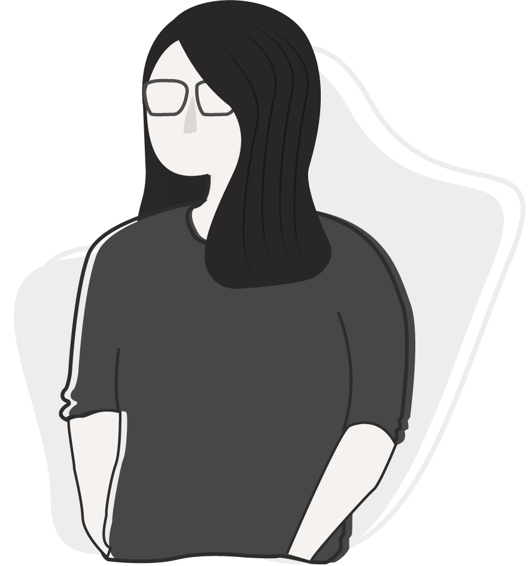

Hello! I'm Xiu Li, I enjoy reading as a hobby and I spend a lot of time on YouTube. I also love travelling because I can get to experience the world in a different way, and naturally, it opens up my mind.
After realising I have a passion for UIUX, I decided to take on the design route. I am constantly looking to learn new things and improve myself even further.
You can write me at
Copyright © 2021 | Designed & Developed by Xiu Li